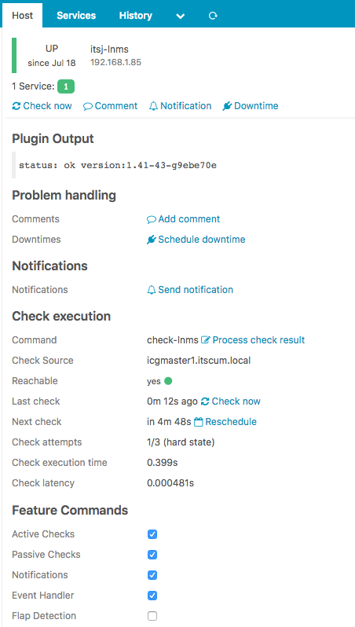

I’ve seen bits and pieces of the process of creating an Icinga2 (or Nagios) plugin, so here are my notes dumped straight from my brain.
First and foremost we need a script to call from Icinga, in this case I created a very simple Python script to simply get the version of LibreNMS running on my monitoring system.
#!/usr/bin/python
import argparse
import requests
import json
import sys
parser = argparse.ArgumentParser(description='Process some integers.')
parser.add_argument('-H', action="store",dest="host", help='name of host to check')
#parser.add_argument('token', metavar='token', help='API token')
token = 'yourAPItokenGOEShere'
args = parser.parse_args()
host_check = 'http://'+args.host+'/api/v0/system'
headers = {'X-Auth-Token': token }
r = requests.get(host_check, headers=headers,verify=False)
json_string = r.text
parsed_json = json.loads(json_string)
system_status = parsed_json['status']
system_ver = parsed_json['system'][0]['local_ver']
if system_status == 'ok':
ret = "status: "+system_status+" version:"+system_ver
print(ret)
sys.exit(0)
elif system_status != 'ok':
ret = "status: "+system_status+" version:"+system_ver
print(ret)
sys.exit(3)
This is a pretty simple script, you could call it with ./check_lnms_ver.py -H 192.168.1.100 to see how it works. With the script working the next portion is done in the command line, first create the directory that will later be referenced as CustomPluginDir
# mkdir -p /opt/monitoring/plugins
Now we need to tell Icinga2 about the directory, this is done in a few different places
in /etc/icinga2/constants.conf add the following
const CustomPluginDir = “/opt/monitoring/plugins”
and in /etc/icinga2/conf.d/commands.conf we add the following block
object CheckCommand "check-lnms" {
command = [ CustomPluginDir + "/check_librenms.py" ]
arguments = {
"-H" = "$address$"
}
}
The block above defines the custom command, specifies the script we created first and also passes the correct flags. Now its time to add the check into the hosts.conf file, so place the following block into /etc/icinga2/conf.d/hosts.conf
object Host "itsj-lnms" {
address = "192.168.1.85"
check_command = "check-lnms"
}
And with that we wait for the next polling cycle and should see something like the screenshot below

{kind=link}
This is a highly simplistic example, but figuring it out was necessary for me because I had to port some existing code from Ruby to Python so I wanted to know exactly how a plugin was created to understand what values were returned and how it all fits together.